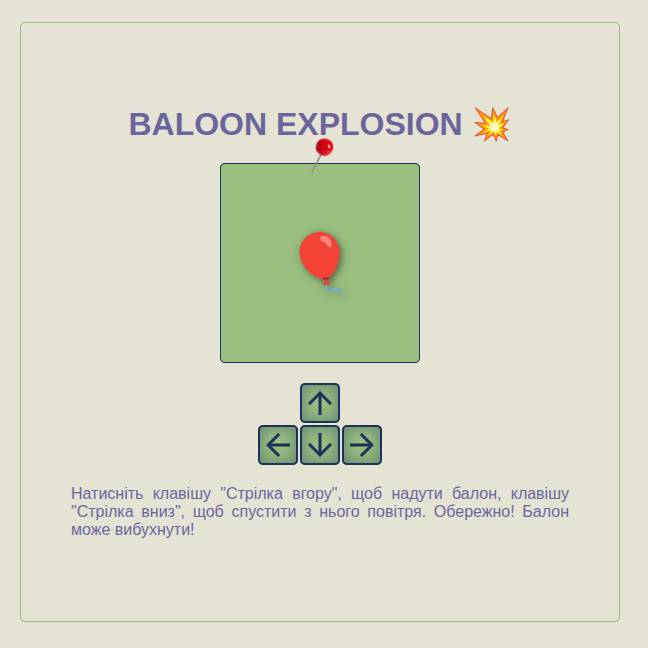

Домашня робота "Повітряна куля"
Завдання:
Напишіть сторінку, на якій зображено повітряну кульку (використовуючи емодзі повітряної кульки, 🎈). Коли ви натискаєте стрілку вгору, вона повинна надуватися (зростати) на 10 відсотків. Коли ви натискаєте стрілку вниз, вона повинна здуватися (стискатися) на 10 відсотків.
Ви можете контролювати розмір тексту (емодзі — це текст), встановивши font-sizeвластивість CSS ( style.fontSize) для його батьківського елемента. Не забудьте включити одиницю вимірювання до значення, наприклад, пікселі ( 10px).
Назви клавіш зі стрілками — "ArrowUp"та "ArrowDown". Переконайтеся, що клавіші змінюють лише виносну бульбашку, без прокручування сторінки.
Як тільки ви це налаштуєте, додайте функцію, за якої, якщо надувати кульку понад певний розмір, вона «вибухає». У цьому випадку вибух означає, що її замінюють емодзі 💥, а обробник подій видаляють (щоб ви не могли надути або здути вибух).
<p> 🎈 </p>
<script> // Ваш
код тут
</script>
Скріншот
Зображення сторінки проекту
